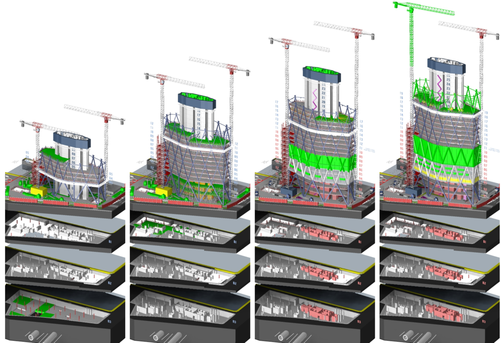

BIM Use: 4D Phase Planning

Phase Planning
A process in which a 4D model (3D models with the added dimension of time) is utilized to effectively plan the phased occupancy in a renovation, retrofit, addition, or to show the construction sequence and space requirements on a building site.
4D modeling is a powerful visualization and communication tool that can give a project team, including the Appointing Party, a better understanding of project milestones and construction plans.
- Better understanding of the phasing schedule by the Appointing Party and showing the critical path.
- Dynamic phasing plans of occupancy offering multiple options and solutions to space conflicts.
- Integrate planning of human, equipment, and material resources with the model to better schedule and cost estimate.
- Space and workspace conflicts identified and resolved ahead of the construction process.
- Marketing purposes and publicity.
- Identification of schedule, sequencing, or phasing issues.
- More readily constructible, operable, and maintainable project.
- Monitor procurement status of project materials.
- Increased productivity and decreased waste on job sites.
- Conveying the spatial complexities of the project, planning information, and support conducting additional analyses.
- Design Authoring Software (Revit, Tekla, etc.)
- Scheduling Software (Primavera P6, MS Project)
- 4D Modeling Software (Navisworks, Synchro)
- Construction Process Knowledge: A 4D model is connected to a schedule and is therefore only as good as the schedule to which it is linked.
- Ability to manipulate, navigate, and review a 3D model.
- Knowledge of 4D software: import geometry, manage links to schedules, produce and control animations.